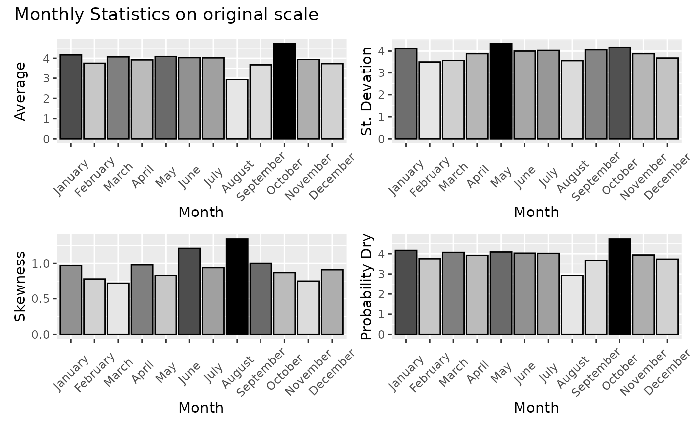
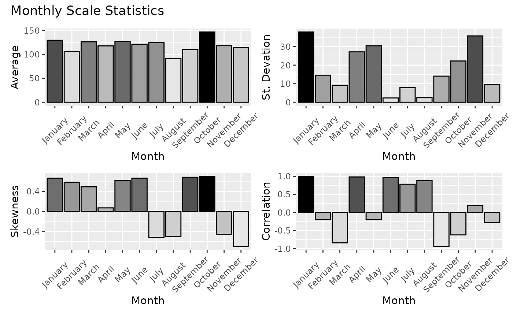

Computes calendar-month statistics for an xts time series: mean, standard deviation, skewness, probability dry, and lag-1 autocorrelation. Optionally computes the same statistics on an aggregated (monthly) scale using the supplied aggregation function. Lag-1 correlation is calculated backward — January pairs with the preceding December so that the within-year correlation structure is captured. Statistics are tabulated per month and presented as a four-panel bar chart via patchwork.
Usage
monthly_stats(
ts,
aggregated = FALSE,
FUN = "mean",
ignore_zeros = FALSE,
zero_threshold = 0.01,
title = FALSE,
time_zone = "UTC"
)Arguments
- ts
An xts object containing the time series data.
- aggregated
Logical; if
TRUE, statistics are also computed on the aggregated monthly scale. DefaultFALSE.- FUN
Aggregation function applied when
aggregated = TRUE(e.g."sum"for precipitation totals,"mean"for temperature). Default"mean".- ignore_zeros
Logical; if
TRUE, zeros are ignored when computing statistics. DefaultFALSE.- zero_threshold
Numeric; threshold below which values are treated as zero. Default
0.01.- title
Logical; if
TRUE, a title annotation is added to the patchwork plot panels. DefaultFALSE.- time_zone
Character; timezone string used for date alignment (e.g.
"UTC"). Default"UTC".
Value
If aggregated = TRUE, a named list with elements
agg_stats (the per-month statistics table),
faggre (the four-panel patchwork plot), and lag1
(the per-month lag-1 correlations). If aggregated = FALSE, a named
list with elements base_stats (the per-month statistics table on the
original scale) and fbase (the four-panel patchwork plot).
Examples
# Synthetic daily precipitation
set.seed(123)
n <- 365 * 3
dates <- seq(as.POSIXct("2000-01-01", tz = "UTC"), by = "day", length.out = n)
precip <- pmax(0, rnorm(n, mean = 3, sd = 5))
ts <- xts::xts(precip, order.by = dates)
ms <- monthly_stats(ts, title = TRUE)
#> Warning: the standard deviation is zero
ms$fbase

ms$base_stats
#> January February March April May June
#> NumofData 93.00000 85.00000 93.00000 90.00000 93.00000 90.00000
#> NumofMisData 0.00000 0.00000 0.00000 0.00000 0.00000 0.00000
#> PercOfMissingData 0.00000 0.00000 0.00000 0.00000 0.00000 0.00000
#> Min 0.00000 0.00000 0.00000 0.00000 0.00000 0.00000
#> Max 16.46000 13.84000 14.99000 16.42000 15.77000 19.21000
#> Mean 4.17000 3.75000 4.07000 3.92000 4.09000 4.03000
#> Var 16.90000 12.22000 12.78000 15.04000 18.84000 15.98000
#> StDev 4.11000 3.50000 3.57000 3.88000 4.34000 4.00000
#> Variation 0.99000 0.93000 0.88000 0.99000 1.06000 0.99000
#> Mom3 66.99000 33.12000 32.62000 56.62000 67.31000 76.83000
#> Skewness 0.97000 0.78000 0.72000 0.98000 0.83000 1.21000
#> Kurtosis 3.00000 3.00000 3.00000 3.00000 3.00000 5.00000
#> Lmean 4.17000 3.75000 4.07000 3.92000 4.09000 4.03000
#> LScale 2.25000 1.95000 1.99000 2.12000 2.38000 2.15000
#> L3 0.53000 0.40000 0.32000 0.53000 0.64000 0.51000
#> L4 0.13000 0.06000 0.08000 0.12000 0.01000 0.17000
#> LVariation 0.54000 0.52000 0.49000 0.54000 0.58000 0.53000
#> LSkewness 0.24000 0.21000 0.16000 0.25000 0.27000 0.24000
#> LKurtosis 0.06000 0.03000 0.04000 0.06000 0.01000 0.08000
#> Pdr 0.24000 0.21000 0.24000 0.22000 0.32000 0.24000
#> Q5 0.00000 0.00000 0.00000 0.00000 0.00000 0.00000
#> Q25 0.13000 0.67000 0.54000 0.24000 0.00000 0.27000
#> Q50 3.65000 2.86000 4.03000 2.99000 2.60000 3.67000
#> Q75 6.32000 6.27000 6.56000 6.49000 6.99000 5.81000
#> Q95 11.72000 10.32000 9.57000 11.34000 12.35000 11.72000
#> IQR 6.19000 5.60000 6.02000 6.25000 6.99000 5.54000
#> MeanDAfterZero 5.30266 3.59685 5.80082 6.55887 5.07700 5.72552
#> VarDAfterZero 18.63197 13.45986 6.27248 23.36778 12.28203 21.59907
#> MeanDBeforeZero 5.01907 5.78552 5.36801 3.46199 7.21849 6.07543
#> VarDBeforeZero 13.40061 11.54030 11.27124 6.03084 23.17105 15.66414
#> MeanDAfterD 5.61582 5.10373 5.21458 4.68074 6.48103 5.22847
#> VarDAfterD 13.95617 9.79533 11.21524 11.36277 17.44349 12.43277
#> ProbDD 0.57609 0.63095 0.59783 0.62921 0.46739 0.57303
#> ProbNDND 0.00000 0.00000 0.00000 0.00000 0.00000 0.00000
#> July August September October November December
#> NumofData 93.00000 93.00000 90.00000 93.00000 90.00000 92.00000
#> NumofMisData 0.00000 0.00000 0.00000 0.00000 0.00000 0.00000
#> PercOfMissingData 0.00000 0.00000 0.00000 0.00000 0.00000 0.00000
#> Min 0.00000 0.00000 0.00000 0.00000 0.00000 0.00000
#> Max 15.44000 14.50000 14.53000 17.16000 15.29000 15.86000
#> Mean 4.02000 2.93000 3.67000 4.73000 3.94000 3.73000
#> Var 16.27000 12.69000 16.46000 17.32000 15.04000 13.52000
#> StDev 4.03000 3.56000 4.06000 4.16000 3.88000 3.68000
#> Variation 1.00000 1.22000 1.10000 0.88000 0.98000 0.99000
#> Mom3 61.65000 60.33000 66.28000 62.28000 43.47000 44.92000
#> Skewness 0.94000 1.34000 1.00000 0.87000 0.75000 0.91000
#> Kurtosis 3.00000 4.00000 3.00000 3.00000 3.00000 3.00000
#> Lmean 4.02000 2.93000 3.67000 4.73000 3.94000 3.73000
#> LScale 2.21000 1.85000 2.19000 2.30000 2.15000 2.02000
#> L3 0.57000 0.67000 0.67000 0.44000 0.48000 0.46000
#> L4 0.11000 0.16000 0.08000 0.18000 0.01000 0.07000
#> LVariation 0.55000 0.63000 0.60000 0.49000 0.55000 0.54000
#> LSkewness 0.26000 0.36000 0.31000 0.19000 0.22000 0.23000
#> LKurtosis 0.05000 0.08000 0.04000 0.08000 0.01000 0.04000
#> Pdr 0.23000 0.37000 0.30000 0.19000 0.29000 0.28000
#> Q5 0.00000 0.00000 0.00000 0.00000 0.00000 0.00000
#> Q25 0.21000 0.00000 0.00000 0.81000 0.00000 0.00000
#> Q50 3.01000 1.87000 2.43000 4.03000 3.15000 2.92000
#> Q75 6.20000 4.62000 6.33000 7.32000 6.39000 5.99000
#> Q95 11.26000 10.84000 11.37000 12.53000 11.05000 11.51000
#> IQR 5.98000 4.62000 6.33000 6.50000 6.39000 5.99000
#> MeanDAfterZero 5.74990 4.79036 4.83796 4.25543 5.92197 5.75343
#> VarDAfterZero 18.17131 15.50049 17.58277 5.34266 18.33795 16.58715
#> MeanDBeforeZero 4.99764 3.65046 6.14246 6.86301 6.46853 4.68254
#> VarDBeforeZero 14.04262 5.48474 17.06029 16.50126 8.86141 11.12287
#> MeanDAfterD 5.12050 4.62803 5.49729 6.25373 5.43682 4.98036
#> VarDAfterD 14.33719 10.22921 14.58296 16.71345 10.88013 9.09814
#> ProbDD 0.61957 0.38043 0.48315 0.64130 0.53933 0.51648
#> ProbNDND 0.00000 0.00000 0.00000 0.00000 0.00000 0.00000
# Aggregated monthly scale with sum
ms_agg <- monthly_stats(ts, aggregated = TRUE, FUN = "sum", title = TRUE)
#> Warning: the standard deviation is zero
ms_agg$faggre

# Ignoring zeros (dry days)
ms_nz <- monthly_stats(ts, ignore_zeros = TRUE, zero_threshold = 0.1)
#> Warning: the standard deviation is zero